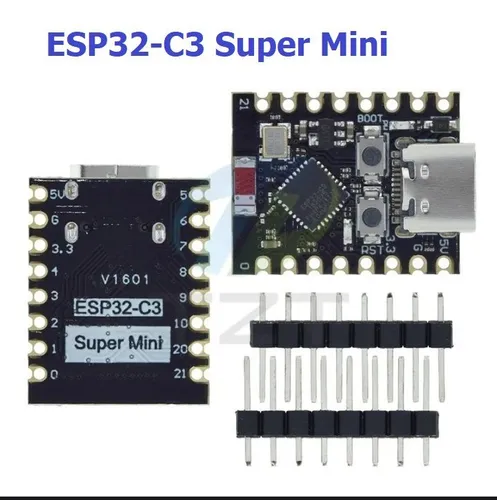

Bluetooth-дисплей на аккумуляторе: устройство, которому я смогу писать сам
Маленький экран с аккумулятором, который показывает всё, что ему пришлют по
Bluetooth. Собирается почти без пайки: у экрана ножки уже распаяны продавцом, провода вставляются в
беспаечную макетную плату, питание зажимается винтовой колодкой. Единственная пайка — две планки
ножек на самом микроконтроллере (5 минут). Дальше я или телефон пишем на него текст — и он появляется на экране.
1 483 ₽вся сборка: 8 позиций, у всех доставка «завтра»
★4.9у всех товаров есть отзывы (82–22 604 штуки)
≈18 чработа от одного заряда (2000 мА·ч, ток ≈90 мА)
1пайка за всю сборку — две планки ножек на плате
Почему нет «одной платы со встроенным экраном»
Эту ловушку стоит знать. Дешёвые предложения «TTGO T-Display ESP32 с дисплеем 1,14″»
за 485 ₽ — это не плата, а пластиковый корпус под неё
(в названии спрятано «ABS Shell»). Настоящая плата с экраном, у которой есть отзывы, стоит
3 594 ₽ — вчетверо дороже всей сборки ниже. А комплект ESP32-S3
с дисплеем за 224 ₽ имеет оценку ★1.0 по одному отзыву. Поэтому собираем
из проверенных модулей.
Что покупать

★4.9 · 82 отзыва
Микроконтроллер
ESP32-C3 Super Mini Отладочная плата на базе микроконтроллера ESP32-C3, type-C
ESP32-C3: Wi-Fi + Bluetooth, питание 3,7–5 В
Гребёнки ножек идут в комплекте и НЕ распаяны — это единственная пайка в сборке (2 планки, ~5 минут)
Провод соединительный мама-мама "Dupont", 10 см, 40 шт
124 ₽
1 шт
124 ₽
завтра
★4.9 · 665
Отсек для аккумулятора
Батарейный отсек 1х для аккумуляторов Li-ion 18650 с про
62 ₽
1 шт
62 ₽
завтра
★4.9 · 22 604
Аккумулятор
Аккумулятор 18650 2000 мАч Li-ion 3,7 В,1 ШТ
222 ₽
1 шт
222 ₽
завтра
★4.9 · 15 138
Плата зарядки
Модуль зарядки TP4056 USB Type-C с защитой,зарядное устр
64 ₽
1 шт
64 ₽
завтра
★4.9 · 1 176
Клеммная колодка
Клеммная колодка винтовая с крышкой, 8 контактов, 15 А,
119 ₽
1 шт
119 ₽
завтра
★4.9 · 863
Всего
1 483 ₽
Количества указаны явно: в наборе проводов 40 штук, а нужно 6 — одного набора хватит с запасом;
остальные позиции берутся по одной.
Как это соединяется
Что с чем
Чем соединяется
Куда именно
Ножки микроконтроллера
пайка — единственная в сборке
гребёнки лежат в комплекте отдельно и не распаяны: припаиваются к плате, после чего
плата вставляется в макетную плату
Экран → макетная плата
4 провода «мама-мама»
у экрана ножки уже распаяны продавцом; «мама» надевается и на ножки экрана, и на ножки
платы: VCC → 3V3, GND → GND, SDA → GPIO8, SCL → GPIO9
Батарейный отсек → плата зарядки
винтовая клеммная колодка
четыре провода зажимаются винтами: плюс отсека → B+, минус отсека → B−,
выход OUT+ и OUT− → в макетную плату
Плата зарядки → макетная плата
2 провода «мама-мама»
OUT+ → 5V, OUT− → GND
Почему «мама-мама», а не «папа-мама». «Мама» нужна там, где есть штырёк. После пайки
гребёнок штырьки есть и у платы, и у экрана — значит, подходят обычные «мама-мама».
«Папа-мама» понадобился бы для гнёзд платы расширения, но её в этой сборке заменила макетная
плата: дешевле, держит жёстче и позволяет менять схему без пайки.
Три вопроса про соединения
1. Провода отсека правда просто засовываются в винты?
Да. У колодки восемь независимых винтов: зачищаешь конец провода на 8–10 мм, вставляешь в
отверстие, затягиваешь винт. Это самое крепкое соединение во всей сборке, паять не нужно.
Полярность проверь дважды: перепутанный плюс портит плату зарядки.
2. Провода «мама-мама» не будут болтаться?
На штырьках они держатся трением: сами не выпадут, но при рывке сойдут. Подрезать провода не
нужно и вредно — подрезанный конец придётся переобжимать, то есть паять. Вместо подрезки в сборке
есть макетная плата: плата, экран и провода вставляются в неё, и вся конструкция
становится жёсткой, как будто всё припаяно. Это стандартный способ у радиолюбителей.
3. Значит, паять всё-таки придётся?
Да, ровно один раз: две планки ножек к микроконтроллеру. На фото товара видно, что гребёнка
лежит рядом с платой отдельно — без неё провода физически некуда надеть. Это две планки, около
5 минут любым паяльником. Всё остальное собирается без пайки. Вариант «вообще без пайки» бывает,
но требует платы с уже распаянными ножками: с доставкой «завтра» и нормальными отзывами таких
в наличии нет — они едут 3–7 дней.
По Bluetooth или Wi-Fi прошивка не заливается — у ESP32 так не бывает. Порядок такой:
Первая заливка — только по USB. Плата подключается кабелем к компьютеру, в Arduino IDE
ставится ядро esp32 и библиотеки (NimBLE-Arduino, Adafruit SSD1306, Adafruit GFX), выбирается
плата «ESP32C3 Dev Module» и нажимается «Загрузить». Внутри файла прошивки это расписано по шагам.
На Windows может понадобиться драйвер USB-COM (CH340) — обычная заминка первого запуска.
Дальше можно по Wi-Fi. Если добавить в прошивку режим OTA (обновление по воздуху),
следующие версии будут заливаться по Wi-Fi без кабеля. Скажи — добавлю, когда плата будет на руках.
Bluetooth — только для данных. По нему устройство принимает текст для показа
(сервис Hermes-Display), но не прошивку.
Порядок сборки
Припаяй две планки ножек к микроконтроллеру — это единственная пайка за всю сборку.
Вставь микроконтроллер и экран в макетную плату.
Соедини экран с платой четырьмя проводами «мама-мама»: VCC → 3V3, GND → GND, SDA → GPIO8,
SCL → GPIO9. Если экран молчит — поменяй местами SDA и SCL.
Вставь аккумулятор в отсек. Провода отсека и провода от платы зарядки зажми в клеммной
колодке винтами: плюс → B+, минус → B−. Полярность проверь дважды — перепутанная портит плату.
Двумя проводами «мама-мама» подай выход платы зарядки (OUT+ и OUT−) на 5V и GND макетной платы.
Проверь, что устройство видно как Hermes-Display, и отправь первый текст:
python send_text.py "Привет, дисплей!"
(send_text.py).
Файлы проекта: c3_oled_firmware.ino — прошивка под ESP32-C3 и OLED t_display_firmware.ino — вторая прошивка, если
когда-нибудь появится плата со встроенным экраном send_text.py — скрипт отправки текста (Python, bleak)
Честно о рисках
Стоимость — 1 483 ₽, а не меньше: это цена правильных разъёмов и товаров
с отзывами. Убрать клеммную колодку нельзя — без неё голые провода отсека соединять нечем.
Одна пайка всё-таки есть — две планки ножек микроконтроллера. Без них провода
подключать некуда, а плат с уже распаянными ножками с доставкой «завтра» и отзывами
в наличии не оказалось (они едут 3–7 дней).
Слабое место сборки — стык проводов отсека с платой зарядки: винтовая колодка держит
крепко, но если хочется совсем надёжно, эти четыре точки стоит пропаять.
Код написан, но на живом железе не проверен — платы пока нет. Скажи, когда приедет, —
зальём прошивку и поправим то, что не сойдётся.
Первая прошивка требует компьютера с USB и драйвером USB-COM.